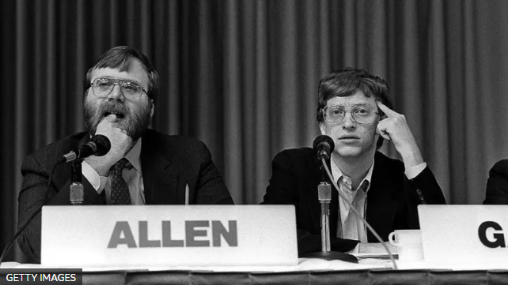
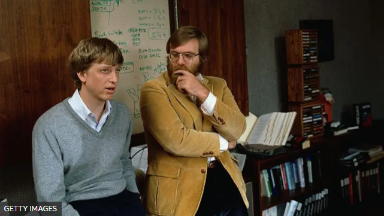

"Una computadora para cada hogar": la histórica entrevista de Bill Gates con la BBC en la que explicaba cómo Microsoft cambiaría el mundo

Cuando la BBC emitió por primera vez una entrevista con Bill Gates, cofundador de Microsoft, en junio de 1993, se pensaba que sólo había en total 130 sitios web. El programa científico Horizon, de la BBC, investigaba la nueva "frontera electrónica", en una era en la que "la información empieza a redefinir nuestro mundo, su geografía y su economía".
Gates le dijo al programa: "Ésta es la era de la información y el ordenador es la herramienta de la era de la información y el software es lo que determinará la facilidad con que podemos acceder a toda esa información".
Los telespectadores podían enviar un cheque de US$2,5 y recibir por correo una transcripción del programa.
El programa se preguntaba: "¿Necesitamos un sinfín de información, o sólo necesitan vendérnosla?".
En un mundo en el que una lista de casi todos los sitios web entraba en dos caras de una hoja de papel, la world wide web (o rede informática mundial) ni siquiera recibió una mención. Sin embargo, las ideas exploradas en el programa son muy adelantadas a su tiempo.
La industria informática ya había crecido más rápido que ninguna otra en la historia, pero la clave de los beneficios futuros estaba en crear algo portátil y fácil de usar.
En los inicios de Microsoft, Bill Gates y Paul Allen se fijaron el objetivo de tener un ordenador en cada escritorio y en cada casa, con productos de Microsoft, por supuesto.
Se conocieron de niños en un colegio privado de Seattle, donde descubrieron que compartían el amor por los ordenadores. Ambos fueron a la universidad, pero la abandonaron y crearon Microsoft, llamada así porque ofrecía software para microordenadores.
La gran oportunidad de la empresa llegó en 1980, cuando Microsoft aceptó producir el sistema operativo para el ordenador personal que estaba desarrollando IBM, la principal empresa informática del mundo en aquel momento.
En un golpe de genio empresarial, Microsoft logró el permiso para conceder licencias del sistema operativo a otros fabricantes, generando una industria de ordenadores personales "compatibles con IBM" que dependían de su producto MS-DOS. El dinero había empezado a entrar y, a día de hoy, aún no ha parado.
Mientras Gates era el informático de mentalidad seria, Allen era su excéntrico hermano mayor. Allen trabajó en Microsoft hasta 1983, cuando se apartó de la primera línea tras serle diagnosticado un cáncer de sangre. Se recuperó para convertirse en un exitoso inversor de capital riesgo y, tras conservar su parte de la empresa, fue un fijo en las listas de ricos del mundo hasta su muerte en 2018 a los 65 años.
Allen utilizó su enorme fortuna para invertir en sus pasiones personales. Fue propietario del equipo de baloncesto Portland Trail Blazers y del equipo de la NFL Seattle Seahawks, que ganó el Super Bowl en 2013.
Su partida de Microsoft también le permitió tener más tiempo para perfeccionar su práctica con la guitarra. El legendario productor musical Quincy Jones llegó a afirmar en una entrevista para una revista que Allen "canta y toca igual que Hendrix".
"Fui de viaje en su yate, y tenía a David Crosby, Joe Walsh, Sean Lennon... luego, los dos últimos días, Stevie Wonder vino con su banda e hizo que Paul subiera a tocar con él: es bueno", comentó Jones.
El diseño del Museo de la Cultura Pop de Seattle, que él fundó, fue sido comparado con una guitarra destrozada y fue creado por el arquitecto superestrella Frank Gehry.
Allen abandonó Microsoft antes de que productos como Windows, Excel y Word llegaran a los hogares y oficinas de todo el mundo. A principios de los 90, la visión de Gates de las computadoras conectadas a la red disparó las ventas y los beneficios.
Sin embargo, el sueño inicial de ambos de poner un ordenador con software de Microsoft en cada hogar y empresa se quedó a medias.
El procesamiento de textos y las hojas de cálculo eran lucrativos, pero el incesante afán de expansión de Microsoft necesitaba nuevos mundos que explorar.
El siguiente paso era llevar los servicios multimedia a los hogares, convirtiendo el ordenador personal en un dispositivo de comunicación. Era el mundo del ocio tan querido por Allen el que Gates necesitaba explotar.
Noticias Relacionadas

Meta se lanza a por la energía nuclear para sus centros de datos de IA: acaba de sellar un ambicioso acuerdo a 20 años
Meta ha firmado un acuerdo para alimentar algunos sus centros de datos con energía nuclear Microsoft, Google y Amazon también están apostando por este tipo de solución.
Leer más
Europa y España están sufriendo una ola de ciberataques. Así que Microsoft ha decidido tomar cartas en el asunto
Microsoft quiere ‘blindar’ a Europa frente a ciberataques con IA El nuevo programa es gratuito y se adapta a cada país España ya es uno de los grandes objetivos de los cibercriminales.
Leer más